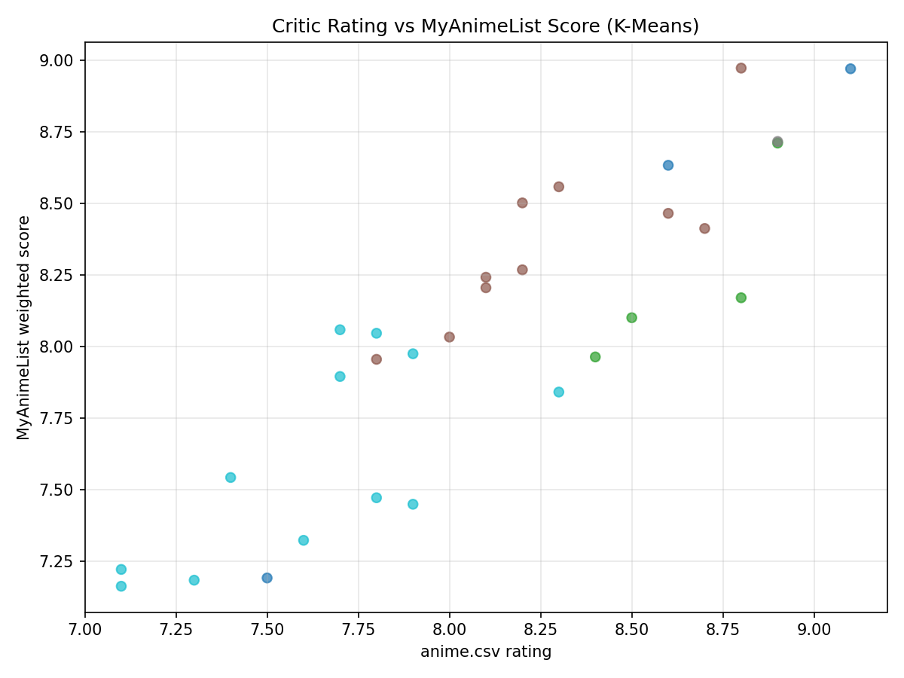
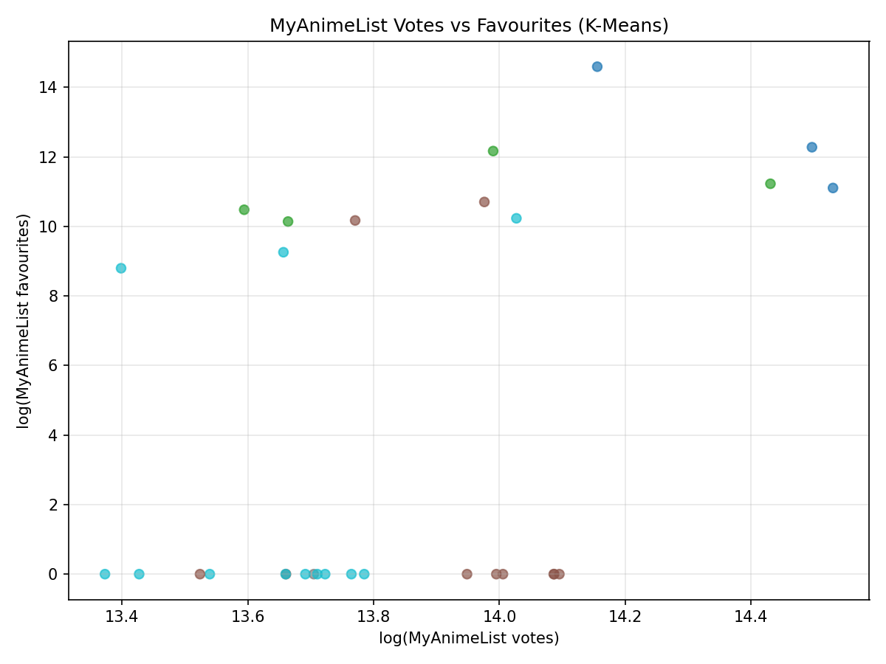
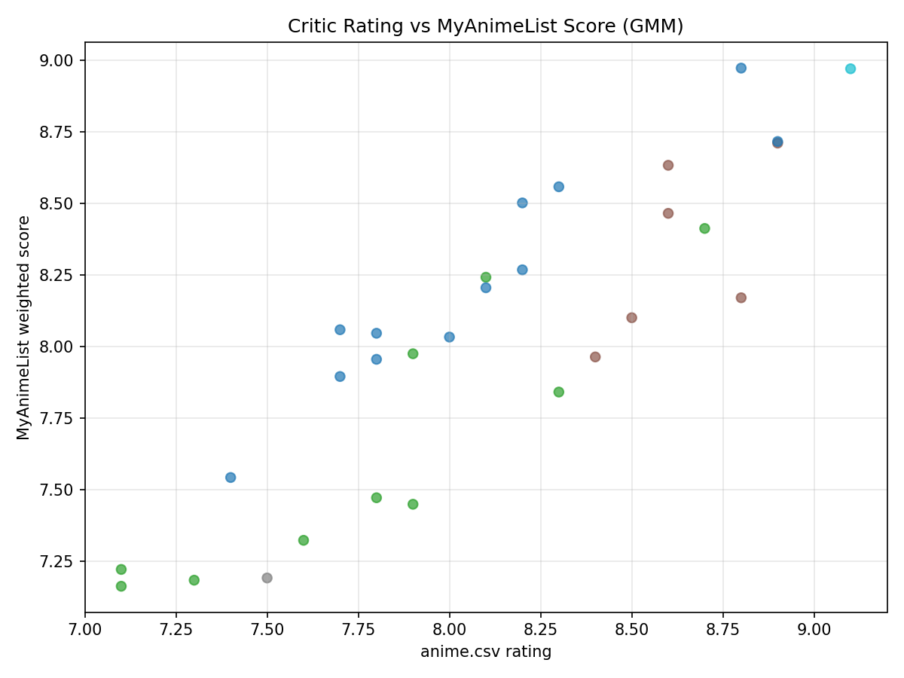
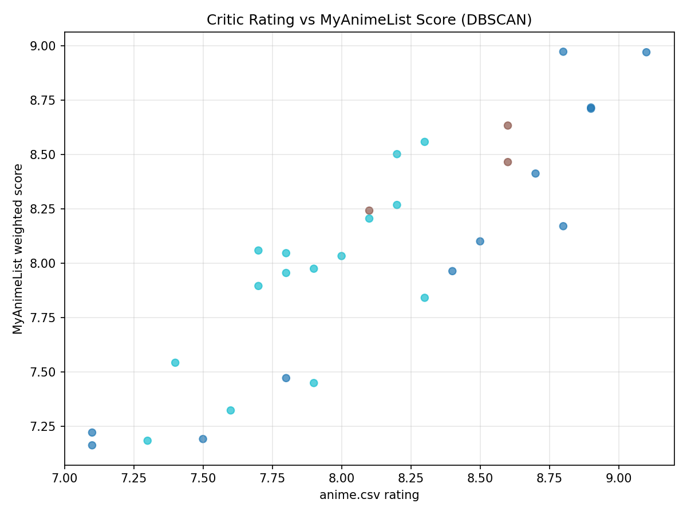
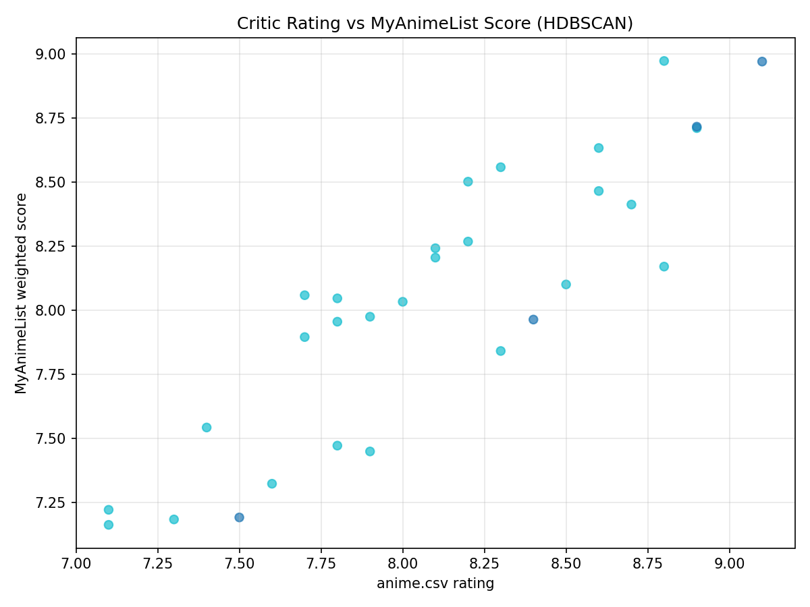
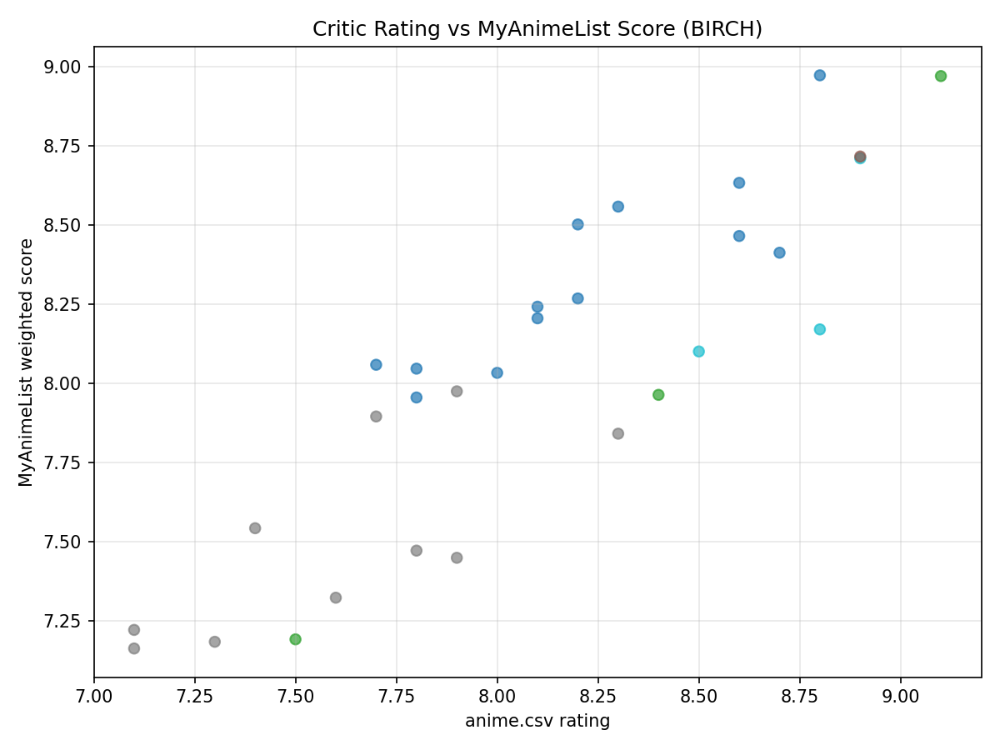
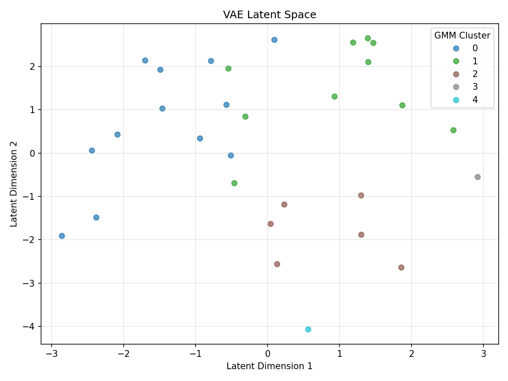
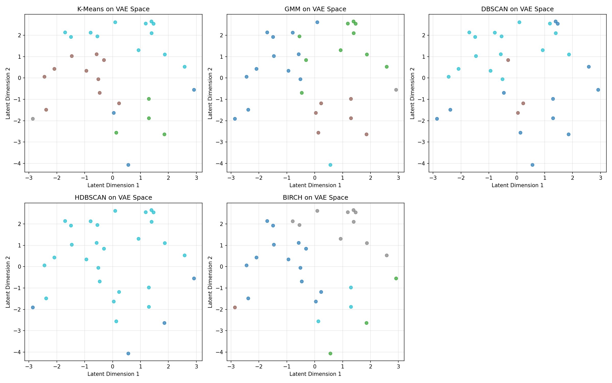
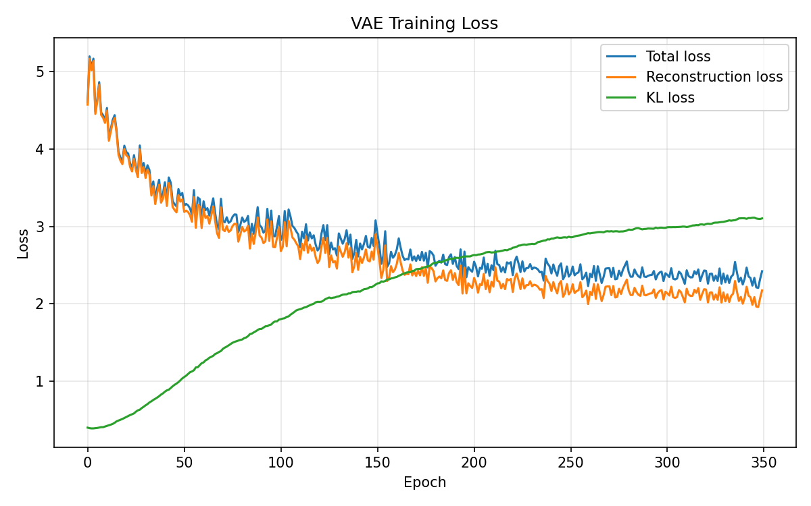

Titles Clustered
30
This dashboard summarizes the generated files in main-project/output, including algorithm comparisons, cluster summaries, plots, and a compact verdict on which model looked strongest on this dataset.
Centroid-based baseline that forces each title into one of k compact groups.
Soft clustering with Gaussian components, useful when clusters overlap.
Density-based clustering that can label sparse titles as noise.
Hierarchical density clustering that adapts cluster shape and can keep noise separate.
Tree-based clustering that scales well and often gives balanced partitions.
The snapshot below shows the first 10 rows from clustered_anime.csv after feature engineering and label assignment.
| title | genre | critic_rating | mal_weighted_score | rating_gap | kmeans_cluster | gmm_cluster | dbscan_cluster | hdbscan_cluster | birch_cluster |
|---|---|---|---|---|---|---|---|---|---|
| Fullmetal Alchemist: Brotherhood | Animation, Action, Adventure | 9.1 | 8.9697 | -0.1303 | 0 | 4 | -1 | -1 | 1 |
| One Piece | Animation, Action, Adventure | 8.9 | 8.7102 | -0.1898 | 1 | 2 | -1 | 0 | 4 |
| Cowboy Bebop | Animation, Action, Adventure | 8.9 | 8.7158 | -0.1842 | 3 | 0 | -1 | -1 | 2 |
| Dragon Ball Z | Animation, Action, Adventure | 8.8 | 8.1701 | -0.6299 | 1 | 2 | -1 | 0 | 4 |
| Steins;Gate | Animation, Comedy, Drama | 8.8 | 8.972 | 0.172 | 2 | 0 | -1 | 0 | 0 |
| Haikyuu!! | Animation, Comedy, Drama | 8.7 | 8.4121 | -0.2879 | 2 | 1 | -1 | 0 | 0 |
| Jujutsu Kaisen | Animation, Action, Adventure | 8.6 | 8.6327 | 0.0327 | 0 | 2 | 0 | 0 | 0 |
| Mob Psycho 100 | Animation, Action, Comedy | 8.6 | 8.4649 | -0.1351 | 2 | 2 | 0 | 0 | 0 |
| Fullmetal Alchemist | Animation, Action, Adventure | 8.5 | 8.1004 | -0.3996 | 1 | 2 | -1 | 0 | 4 |
| Naruto | Animation, Action, Adventure | 8.4 | 7.9635 | -0.4365 | 1 | 2 | -1 | -1 | 1 |











| algorithm | clusters_found | noise_points | noise_pct | largest_cluster | silhouette_score |
|---|---|---|---|---|---|
| K-Means | 5 | 0 | 0 | 12 | 0.18 |
| GMM | 5 | 0 | 0 | 12 | 0.1298 |
| DBSCAN | 2 | 12 | 40 | 15 | 0.3387 |
| HDBSCAN | 1 | 4 | 13.33 | 26 | N/A |
| BIRCH | 5 | 0 | 0 | 13 | 0.2029 |
| kmeans_cluster | titles | critic_rating | mal_weighted_score | rating_gap | mal_votes_total | mal_favourites | mal_popularity_rank | release_year |
|---|---|---|---|---|---|---|---|---|
| 0 | 3 | 8.4 | 8.26 | -0.14 | 1808318.67 | 817084.33 | 8.33 | 2013.67 |
| 1 | 4 | 8.65 | 8.24 | -0.41 | 1175500.25 | 81912.25 | 53 | 1998.25 |
| 2 | 10 | 8.28 | 8.36 | 0.08 | 1122876.8 | 35245.5 | 36.9 | 2013.6 |
| 3 | 1 | 8.9 | 8.72 | -0.18 | 895402 | N/A | 43 | 1998 |
| 4 | 12 | 7.63 | 7.6 | -0.04 | 858362.5 | 14937.33 | 71.25 | 2014.08 |
| gmm_cluster | titles | critic_rating | mal_weighted_score | rating_gap | mal_votes_total | mal_favourites | mal_popularity_rank | release_year |
|---|---|---|---|---|---|---|---|---|
| 0 | 12 | 8.08 | 8.23 | 0.15 | 996354.5 | N/A | 50.75 | 2011.42 |
| 1 | 10 | 7.78 | 7.63 | -0.15 | 929403.3 | 17726 | 62.5 | 2015 |
| 2 | 6 | 8.63 | 8.34 | -0.29 | 1213539.17 | 423780 | 43.67 | 2004.83 |
| 3 | 1 | 7.5 | 7.19 | -0.31 | 2043535 | 66367 | 5 | 2012 |
| 4 | 1 | 9.1 | 8.97 | -0.13 | 1976420 | 214254 | 3 | 2009 |
| dbscan_cluster | titles | critic_rating | mal_weighted_score | rating_gap | mal_votes_total | mal_favourites | mal_popularity_rank | release_year |
|---|---|---|---|---|---|---|---|---|
| -1 | 12 | 8.3 | 8.09 | -0.21 | 1234954.25 | 72564.67 | 43.42 | 2006.58 |
| 0 | 3 | 8.43 | 8.45 | 0.01 | 1178490 | 747041 | 35 | 2018.33 |
| 1 | 15 | 7.88 | 7.92 | 0.04 | 946437.07 | N/A | 58.53 | 2013.53 |
| hdbscan_cluster | titles | critic_rating | mal_weighted_score | rating_gap | mal_votes_total | mal_favourites | mal_popularity_rank | release_year |
|---|---|---|---|---|---|---|---|---|
| -1 | 4 | 8.48 | 8.21 | -0.26 | 1691378.5 | 118521 | 14.75 | 2005.25 |
| 0 | 26 | 8.05 | 8.02 | -0.03 | 991767.81 | 282071.33 | 55.58 | 2012.15 |
| birch_cluster | titles | critic_rating | mal_weighted_score | rating_gap | mal_votes_total | mal_favourites | mal_popularity_rank | release_year |
|---|---|---|---|---|---|---|---|---|
| 0 | 13 | 8.22 | 8.33 | 0.11 | 1073432.77 | 747041 | 43.69 | 2013.69 |
| 1 | 3 | 8.33 | 8.04 | -0.29 | 1956704 | 118521 | 5.33 | 2007.67 |
| 2 | 1 | 8.9 | 8.72 | -0.18 | 895402 | N/A | 43 | 1998 |
| 3 | 10 | 7.61 | 7.51 | -0.1 | 897949.3 | 14937.33 | 67.3 | 2014.7 |
| 4 | 3 | 8.73 | 8.33 | -0.41 | 950614.67 | 84235.67 | 68 | 1997 |
| cluster_id | short_description | representatives |
|---|---|---|
| 0 | Well-regarded by critics and MAL; varied era, solid engagement | Re:Zero kara Hajimeru Isekai Seikatsu; Steins;Gate; Toradora! |
| 1 | Recent high-rated mainstream hits with strong fandom | Jujutsu Kaisen; Mob Psycho 100; Dr. Stone |
| 2 | Classic standalone with high critic score | Cowboy Bebop |
| 3 | Moderately received/divisive series where MAL trails critics | Akame ga Kill!; Fairy Tail; Kakegurui |
| 4 | Iconic, long-running franchises with huge engagement; MAL < critic | One Piece; Naruto; Dragon Ball Z; Fullmetal Alchemist |
| 5 | Polarizing mega-hit: extremely high engagement but lower scores | Sword Art Online |
| 6 | Universally acclaimed masterpiece with top engagement | Fullmetal Alchemist: Brotherhood |
The noisiest model was DBSCAN at 40% noise, while DBSCAN reached the top silhouette score of 0.3387. HDBSCAN found a broad dominant cluster with a smaller noise set, which may indicate the dataset is compact after scaling.